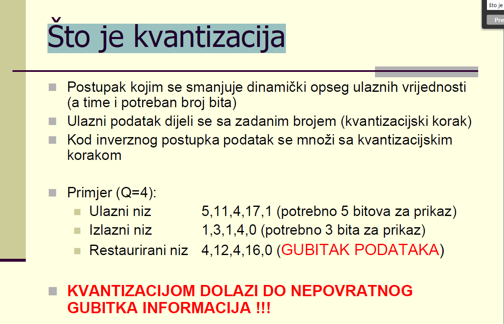
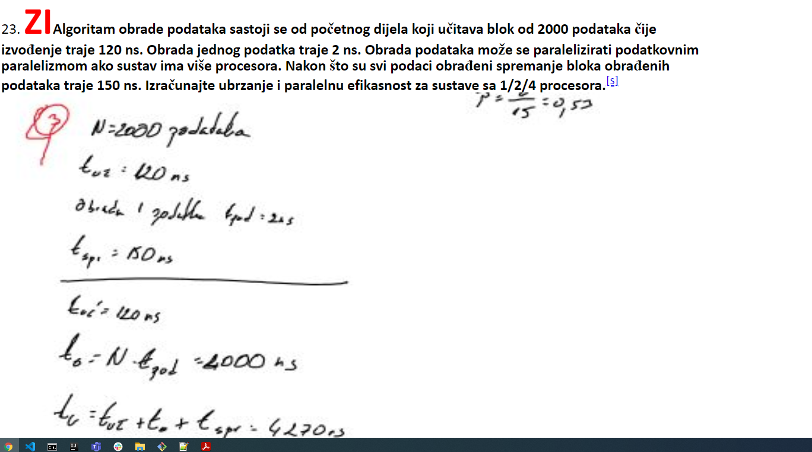
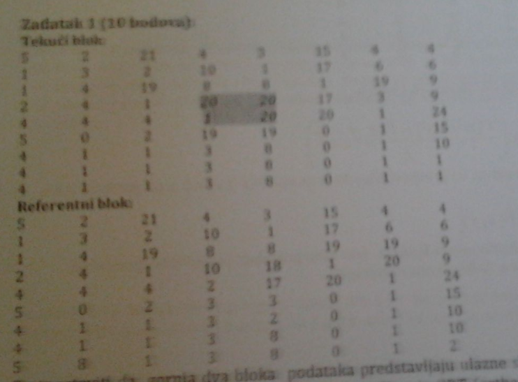
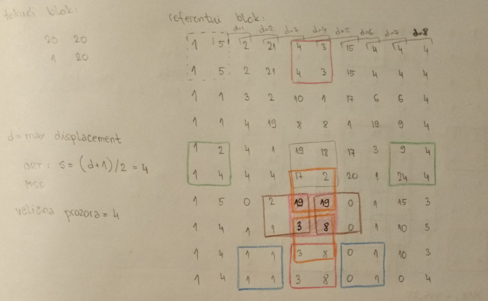

gama sjećam se iz ispita kod proračuna koliko su ORT i LOG efikasniji - ne uzima se, dakle jednom kad je neki blok izračunat više ga se ne računa - bilo da nam on treba odmah u sljedećem koraku ili 10 koraka nakon
Koliko zadataka obicno dode iz prvog dijela?
Kako se radi iz ulaznog u izlazni i suprotno… kako se iz 5 dobije 1 ili pak iz 11 -> 3. 
p444k zadano ti je da je q=4, tj kvantizacijski korak je 4, ulazni niz dijeliš s tim korakom
samo što su oni tu zaokruživali tipa 5/4=1.25 su stavili da je 1, a 11/4=2.75 su na 3, nama će biti ili ceil ili floor vjerujem
Pitanje, na MI-u su u podzadacima ORT i LOG pretrazivanja trazili da se jos nesto racuna, ne sjecam se tocno, mozda preciznost? Jel itko zna objasnit sta se trazilo i kako su se dobili oni brojevi jer samo znam da meni nisu ispadali pod ponudjenim.
renren a)poboljsanje brzine izvodenja za oba algoritma u odnosu na full search –kako se računa to poboljšanje brzine izvođenja? broj operacija u full search/broj u ovim algoritmima b)koliko iznosi mse ili mad u 2.koraku za desni blok c)konacni vektor pomaka za oba algoritma
ovo je neko u doc napisao
jel formula za UKUPNO ubrzanje sa ona dva dijela: U = 1/(p1/N1 + p2/N2), a za ubrzanje pojedinačnog dijela: U=1/(1-P+P/N) ?
U = 1/(p1/N1 + p2/N2)
U=1/(1-P+P/N)
p444k Da li za taj zadatak vrijedi ovo što je Zabe napisao? Nije mi jasno što su radili u docu na tom zadatku.
Zabe Može neko potvrditi ove formule?
M ože netko ovo iz dokumenta pojasnit? Što nije ako paralelno obrađujem podatke da vrjeme obrade bude kraće?
p444k pročitao sam negdje u tom docsu da se računa “vrijeme programa na procesoru”, tj. na svim jezgrama, što znači npr za 4000ns na 4 jezgre 4*1000ns, tj. opet 4000ns. Ne znam je li to točno doduše…
p444k Vrijeme obrade jednog podatka se ne mijenja, međutim obrada će biti prije završena jer je paralelizirana.
 za ovaj zadatak bi onda s bio 4/2/1 ili 3/2/1?
s
Zabe Zar nije onda d=4 pa d/2=2 pa je s = 2,1?
adrian7000 Ne znam, ako bi netko mogo potvrditi to tvoje, oni su zadali da je početni korak u tom zadatku s = 2, tako da vrlo moguće da je tako
adrian7000 Da, moralo bi biti tako.
 M̵̧̩͑̀͝î̶͍̉ć̴̝̾́̀o̶̺̟̣͂̽ , adrian7000 onda je ovdje kriva logika određivanja d tj. s?
adrian7000 Samo da provjerim, posto nisam ni vidila da ne moraju bit kvadratne matrice, ovo d=4 se dobilo brojanjem redaka ispod obiljezenog bloka?
Zabe Pa tu je krivo definiran d po meni, osim ako je blok s kojim se uspoređuje gornji lijevi
Zabe Po ovome sto se pricalo, tu bi trebalo onda d=4, i s=d/2=2. Valjda.
Zabe Mislim da da jer sam se ja tim postupkom kao na slici vodio na MI i sve mi je bilo krivo.
adrian7000 da samo je pitanje jel se misli na najveći odmak koji je moguć za taj cijeli blok što bi bilo kao ovdje Zabe ili isključivo za taj referentni blok što bi bilo onda d = 4 i s = 2.
renren Da, to sam zakljucio po ovom postu: https://fer.studosi.net/d/2877-mais-zavrsni-ispit-20202021/60